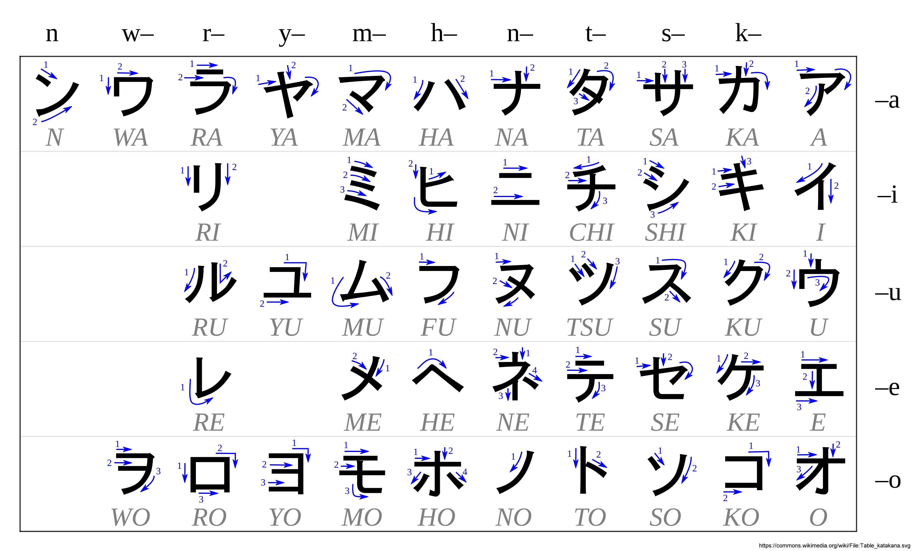

Learning Katakana is the second step that everyone takes while learning Japanese, so if you haven't learned Hiragana yet, you should definitely read this article first! Now then, you may be wondering to yourself: "Why in the world do I need to learn a SECOND set of the same-sounding characters as Hiragana?" And the answer to that question is simple: loanwords.
Katakana is primarily used to differentiate loanwords from native Japanese words, but it's also used for emphasis (like italics), onomatopoeia, and more. Unlike Hiragana which is more rounded and soft-looking, Katakana is more straight and sharp looking to help it stand out against Hiragana when reading. While it may not be used as often as Hiragana, it's still an essential part of the language that you should learn and familarize yourself with.
Below is a table that shows all 46 Katakana characters and just like with the Hiragana one, it is read from right-to-left and top-to-bottom .

It can be tedious doing the same thing all over again, but to speed things up we can skip the pronunciation explanations this time, because all of the 46 basic Katakana characters are pronounced exactly the same as their Hiragana counterparts.
Just like last time you may study around 5-10 characters a day or as many as you like. Head on over to the ア イ ウ エ オ section below to begin learning about the Katakana version of the 5 vowels!
If you're using romaji input, by default your IME should be set to Hiragana. You can switch to Katakana input in two ways:
- Right click the "A" or "あ" in your taskbar (usually bottom right of the screen) and select "Full-width Katakana."
- Press
ALT+CAPSto change to Katakana input andCTRL+CAPSto switch back to Hiragana input.
Additionally, when typing in Hiragana, you can press the space bar a few times to look for the Katakana conversion or press F7 while the kana is underlined to convert it to Katakana.
ア イ ウ エ オ
If you remember from learning Hiragana, the first five characters that we're going to learn are the vowel sounds. These sound exactly the same as their Hiragana counterparts, so if you know how to pronounce those characters, you'll have no problem pronouncing these! Of course, if you have forgotten, we'll include the English pronounciation equivalent in each table alongside the Hiragana character. And if there's any exceptions or tips for memorizing the characters we'll let you know!
Now then, let's begin!
| Katakana | ア |
| Romaji | a |
| Pronunciation | あ/ah |
| Katakana | イ |
| Romaji | i |
| Pronunciation | い/ee |
| Katakana | ウ |
| Romaji | u |
| Pronunciation | う/oo |
| Katakana | エ |
| Romaji | e |
| Pronunciation | え/eh |
| Katakana | オ |
| Romaji | o |
| Pronunciation | お/oh |
Practice
Now that we've learned how to read these characters, let's try recalling and using them!
| As a warm-up, try to repeatedly write the Romaji for the characters that you've just learned. The input will turn green if you get it correct. | ||||
| {ア|a} | {イ|i} | {ウ|u} | {エ|e} | {オ|o} |
| {イ|i} | {ウ|u} | {エ|e} | {オ|o} | {ア|a} |
| {エ|e} | {ア|a} | {オ|o} | {イ|i} | {ウ|u} |
| {オ|o} | {イ|i} | {ア|a} | {ウ|u} | {エ|e} |
| {ウ|u} | {オ|o} | {イ|i} | {エ|e} | {ア|a} |
- Now try to match the entire ア column to their romaji in this drag and drop exercise.
- Wait 10 minutes, then try to write the romaji for the entire ア column in this exercise.
- Wait another 10 minutes, then try drawing the entire ア column in this exercise. You can do additional drawing practice here if you like.
- Feel free to repeat any of these exercises until you have them memorized, while taking a short break (5-10 mins) after each session.
※ All of these exercises contain multiple ways to practice. So, if you'd like to switch things up, scroll to the very bottom of the exercise page and click the Change Exercise Type button to change to a different exercise type.
Once you've practiced enough and feel like you've mastered this set of Katakana, feel free to take a break for the day or move onto the next section to start learning about the カ column!
カ キ ク ケ コ
Next up is the カ column!
| Katakana | カ |
| Romaji | ka |
| Pronunciation | か/kah |
カ looks a lot like its Hiragana counterpart か which should make memorizing it much easier. The only difference is that it doesn't have the third stroke on the outside to the right of it like the Hiragana character does.
| Katakana | キ |
| Romaji | ki |
| Pronunciation | き/kee |
キ is another character in this column that looks just like its Hiragana counterpart き! The difference with this one is that it doesn't have the fourth stroke that loops around at the bottom.
| Katakana | ク |
| Romaji | ku |
| Pronunciation | く/koo |
| Katakana | ケ |
| Romaji | ke |
| Pronunciation | け/keh |
| Katakana | コ |
| Romaji | ko |
| Pronunciation | こ/koh |
Practice
Now that we've learned how to read the characters in the カ column, let's try recalling and using them along with the previous set of characters!
| As a warm-up, try to repeatedly write the Romaji for the characters that you've just learned. The input will turn green if you get it correct. | ||||
| {カ|ka} | {キ|ki} | {ク|ku} | {ケ|ke} | {コ|ko} |
| {キ|ki} | {ク|ku} | {ケ|ke} | {コ|ko} | {カ|ka} |
| {ケ|ke} | {カ|ka} | {コ|ko} | {キ|ki} | {ク|ku} |
| {コ|ko} | {キ|ki} | {カ|ka} | {ク|ku} | {ケ|ke} |
| {ク|ku} | {コ|ko} | {キ|ki} | {ケ|ke} | {カ|ka} |
- Now try to match the entire ア and カ columns to their romaji in this drag and drop exercise.
- Wait 10 minutes, then try to write the romaji for the entire ア and カ columns in this exercise.
- Wait another 10 minutes, then try drawing the entire ア and カ columns in this exercise. You can do additional drawing practice here if you like.
- Feel free to repeat any of these exercises until you have them memorized, while taking a short break (5-10 mins) after each session.
Once you've practiced enough and feel like you've mastered this set of Katakana, feel free to take a break for the day or move onto the next section to start learning about the サ column!
サ シ ス セ ソ
Next up is the サ column!
| Katakana | サ |
| Romaji | sa |
| Pronunciation | さ/sah |
An easy way to remember サ is to think of it as the top part of さ with an extra stroke on the left.
| Katakana | シ |
| Romaji | shi |
| Pronunciation | し/shee |
シ is a character that is often mixed up with a character that you'll learn in the next section; ツ. Looks a lot like シ doesn't it? The trick to telling these two silly looking faces apart is to remember that the eyes on シ are always looking more to the right and the eyes on ツ are always looking down in melancholy.
| Katakana | ス |
| Romaji | su |
| Pronunciation | す/soo |
| Katakana | セ |
| Romaji | se |
| Pronunciation | せ/seh |
セ is another character that looks a lot like its Hiragana counterpart せ. The only difference with the Katakana character is that it doesn't have that second stroke on the top.
| Katakana | ソ |
| Romaji | so |
| Pronunciation | そ/soh |
ソ is a character that is often mixed up with ン, a character that we'll learn about later on. The trick to telling these two apart is pretty much the same as シ and ツ: The little line on ソ is usually drawn downwards and the line on ン is drawn more towards the right.
Practice
Now that we've learned how to read the characters in the サ column, let's try recalling and using them along with all the previous characters that we learned!
| As a warm-up, try to repeatedly write the Romaji for the characters that you've just learned. The input will turn green if you get it correct. | ||||
| {サ|sa} | {シ|shi} | {ス|su} | {セ|se} | {ソ|so} |
| {シ|shi} | {ス|su} | {セ|se} | {ソ|so} | {サ|sa} |
| {セ|se} | {サ|sa} | {ソ|so} | {シ|shi} | {ス|su} |
| {ソ|so} | {シ|shi} | {サ|sa} | {ス|su} | {セ|se} |
| {ス|su} | {ソ|so} | {シ|shi} | {セ|se} | {サ|sa} |
- Now try to match the entire ア, カ, and サ columns to their romaji in this drag and drop exercise.
- Wait 10 minutes, then try to write the romaji for the entire ア, カ, and サ columns in this exercise.
- Wait another 10 minutes, then try drawing the entire サ column and the ア and カ columns. If you like, you can do additional drawing practice by clicking the Change Exercise Type button at the bottom of these exercises and choosing Extended Drawing Practice.
- Feel free to repeat any of these exercises until you have them memorized, while taking a short break (5-10 mins) after each session.
Once you've practiced enough and feel like you've mastered this set of Katakana, feel free to take a break for the day or move onto the next section to start learning about the タ column!
タ チ ツ テ ト
Next up is the タ column!
| Katakana | タ |
| Romaji | ta |
| Pronunciation | た/tah |
| Katakana | チ |
| Romaji | chi |
| Pronunciation | ち/chee |
| Katakana | ツ |
| Romaji | tsu |
| Pronunciation | つ/tsoo |
As mentioned earlier in the サ section, ツ looks a lot like シ and is often easily mixed up with it. Remember: the two lines on ツ are usually drawn downwards and the lines on シ are usually drawn towards the right.
| Katakana | テ |
| Romaji | te |
| Pronunciation | て/teh |
A good trick to remembering テ is imagining that the bottom two strokes are actually just て but flipped to the left.
| Katakana | ト |
| Romaji | to |
| Pronunciation | と/toh |
If you look at ト and と you'll notice that they both have a little line sticking out of them. I like to imagine that ト is just と, but someone bent the rounded stroke so that it's straight and then stuck it on its side.
Practice
Now that we've learned how to read the characters in the タ column, let's try recalling and using them along with all the previous characters that we learned!
| As a warm-up, try to repeatedly write the Romaji for the characters that you've just learned. The input will turn green if you get it correct. | ||||
| {タ|ta} | {チ|chi} | {ツ|tsu} | {テ|te} | {ト|to} |
| {チ|chi} | {ツ|tsu} | {テ|te} | {ト|to} | {タ|ta} |
| {テ|te} | {タ|ta} | {ト|to} | {チ|chi} | {ツ|tsu} |
| {ト|to} | {チ|chi} | {タ|ta} | {ツ|tsu} | {テ|te} |
| {ツ|tsu} | {ト|to} | {チ|chi} | {テ|te} | {タ|ta} |
- Now try to match the entire ア, カ, サ, and タ columns to their romaji in this drag and drop exercise.
- Wait 10 minutes, then try to write the romaji for the entire ア, カ, サ, and タ columns in this exercise.
- Wait another 10 minutes, then try drawing the entire サ and タ columns and the ア and カ columns. If you like, you can do additional drawing practice by clicking the Change Exercise Type button at the bottom of these exercises and choosing Extended Drawing Practice.
- Feel free to repeat any of these exercises until you have them memorized, while taking a short break (5-10 mins) after each session.
Once you've practiced enough and feel like you've mastered this set of Katakana, feel free to take a break for the day or move onto the next section to start learning about the ナ column!
ナ ニ ヌ ネ ノ
Next up is the ナ column!
| Katakana | ナ |
| Romaji | na |
| Pronunciation | な/nah |
An easy way to remember ナ is just to think of it as the two strokes on the left of な, only someone ripped them out of な so now they're alone.
| Katakana | ニ |
| Romaji | ni |
| Pronunciation | に/nee |
ニ looks a lot like its Hiragana counterpart に. The only difference is that someone lost the ニdle on the left of に making it ニ.
| Katakana | ヌ |
| Romaji | nu |
| Pronunciation | ぬ/noo |
| Katakana | ネ |
| Romaji | ne |
| Pronunciation | ね/neh |
| Katakana | ノ |
| Romaji | no |
| Pronunciation | の/noh |
Practice
Now that we've learned how to read the characters in the ナ column, let's try recalling and using them along with all the previous characters that we learned!
| As a warm-up, try to repeatedly write the Romaji for the characters that you've just learned. The input will turn green if you get it correct. | ||||
| {ナ|na} | {ニ|ni} | {ヌ|nu} | {ネ|ne} | {ノ|no} |
| {ニ|ni} | {ヌ|nu} | {ネ|ne} | {ノ|no} | {ナ|na} |
| {ネ|ne} | {ナ|na} | {ノ|no} | {ニ|ni} | {ヌ|nu} |
| {ノ|no} | {ニ|ni} | {ナ|na} | {ヌ|nu} | {ネ|ne} |
| {ヌ|nu} | {ノ|no} | {ニ|ni} | {ネ|ne} | {ナ|na} |
- Now try to match the entire ア, カ, サ, タ, and ナ columns to their romaji in this drag and drop exercise.
- Wait 10 minutes, then try to write the romaji for the entire ア, カ, サ, タ, and ナ columns in this exercise.
- Wait another 10 minutes, then try drawing the entire ナ column, サ and タ columns, and the ア and カ columns. If you like, you can do additional drawing practice by clicking the Change Exercise Type button at the bottom of these exercises and choosing Extended Drawing Practice.
- Feel free to repeat any of these exercises until you have them memorized, while taking a short break (5-10 mins) after each session.
Once you've practiced enough and feel like you've mastered this set of Katakana, feel free to take a break for the day or move onto the next section to start learning about the ハ column!
ハ ヒ フ ヘ ホ
Next up is the ハ column!
| Katakana | ハ |
| Romaji | ha |
| Pronunciation | は/hah |
| Katakana | ヒ |
| Romaji | hi |
| Pronunciation | ひ/hee |
ヒ looks a lot like a sitting person, so a good way to remember this character is the Japanese word for person: hito. This is normally written as ひと, but for the sake of memorizing Katakana we'll write it as ヒト so you can memorize two kana (ヒ and ト) with one word.
| Katakana | フ |
| Romaji | fu |
| Pronunciation | ふ/fhoo |
| Katakana | ヘ |
| Romaji | he |
| Pronunciation | へ/heh |
Can you tell ヘ (Katakana) and へ (Hiragana) apart? I know I sure as heck can't, so they might as well be the same character! Needless to say, you don't really need to memorize this one, like at all, if you already know the Hiragana counterpart.
| Katakana | ホ |
| Romaji | ho |
| Pronunciation | ほ/hoh |
Practice
Now that we've learned how to read the characters in the ハ column, let's try recalling and using them along with all the previous characters that we learned!
| As a warm-up, try to repeatedly write the Romaji for the characters that you've just learned. The input will turn green if you get it correct. | ||||
| {ハ|ha} | {ヒ|hi} | {フ|fu} | {ヘ|he} | {ホ|ho} |
| {ヒ|hi} | {フ|fu} | {ヘ|he} | {ホ|ho} | {ハ|ha} |
| {ヘ|he} | {ハ|ha} | {ホ|ho} | {ヒ|hi} | {フ|fu} |
| {ホ|ho} | {ヒ|hi} | {ハ|ha} | {フ|fu} | {ヘ|he} |
| {フ|fu} | {ホ|ho} | {ヒ|hi} | {ヘ|he} | {ハ|ha} |
- Now try to match the entire ア, カ, サ, タ, ナ, and ハ columns to their romaji in this drag and drop exercise.
- Wait 10 minutes, then try to write the romaji for the entire ア, カ, サ, タ, ナ, and ハ columns in this exercise.
- Wait another 10 minutes, then try drawing the entire ナ and ハ columns, サ and タ columns, and the ア and カ columns. If you like, you can do additional drawing practice by clicking the Change Exercise Type button at the bottom of these exercises and choosing Extended Drawing Practice.
- Feel free to repeat any of these exercises until you have them memorized, while taking a short break (5-10 mins) after each session.
Once you've practiced enough and feel like you've mastered this set of Katakana, feel free to take a break for the day or move onto the next section to start learning about the マ column!
マ ミ ム メ モ
Next up is the マ column!
| Katakana | マ |
| Romaji | ma |
| Pronunciation | ま/mah |
| Katakana | ミ |
| Romaji | mi |
| Pronunciation | み/mee |
| Katakana | ム |
| Romaji | mu |
| Pronunciation | む/moo |
| Katakana | メ |
| Romaji | me |
| Pronunciation | め/meh |
| Katakana | モ |
| Romaji | mo |
| Pronunciation | も/moh |
モ looks a lot like its Hiragana counterpart も which should make remembering it easy. The only real differences are that the two lines at the top are much longer and the line that those two lines are drawn on is not curled at the bottom.
Practice
Now that we've learned how to read the characters in the マ column, let's try recalling and using them along with all the previous characters that we learned!
| As a warm-up, try to repeatedly write the Romaji for the characters that you've just learned. The input will turn green if you get it correct. | ||||
| {マ|ma} | {ミ|mi} | {ム|mu} | {メ|me} | {モ|mo} |
| {ミ|mi} | {ム|mu} | {メ|me} | {モ|mo} | {マ|ma} |
| {メ|me} | {マ|ma} | {モ|mo} | {ミ|mi} | {ム|mu} |
| {モ|mo} | {ミ|mi} | {マ|ma} | {ム|mu} | {メ|me} |
| {ム|mu} | {モ|mo} | {ミ|mi} | {メ|me} | {マ|ma} |
- Now try to match the entire ア, カ, サ, タ, ナ, ハ, and マ columns to their romaji in this drag and drop exercise.
- Wait 10 minutes, then try to write the romaji for the entire ア, カ, サ, タ, ナ, ハ, and マ columns in this exercise.
- Wait another 10 minutes, then try drawing the entire マ column, ナ and ハ columns, サ and タ columns, and the ア and カ columns. If you like, you can do additional drawing practice by clicking the Change Exercise Type button at the bottom of these exercises and choosing Extended Drawing Practice.
- Feel free to repeat any of these exercises until you have them memorized, while taking a short break (5-10 mins) after each session.
Once you've practiced enough and feel like you've mastered this set of Katakana, feel free to take a break for the day or move onto the next section to start learning about the ヤ column!
ヤ ユ ヨ
Next up is the ヤ column!
| Katakana | ヤ |
| Romaji | ya |
| Pronunciation | や/yah |
ヤ looks a lot like its Hiragana counterpart や which should make remembering it a little easier. Just remember it as や's sharp-looking cousin!
| Katakana | ユ |
| Romaji | yu |
| Pronunciation | ゆ/yoo |
| Katakana | ヨ |
| Romaji | yo |
| Pronunciation | よ/yoh |
Practice
Now that we've learned how to read the characters in the ヤ column, let's try recalling and using them along with all the previous characters that we learned!
| As a warm-up, try to repeatedly write the Romaji for the characters that you've just learned. The input will turn green if you get it correct. | ||||
| {ヤ|ya} | {ユ|yu} | {ヨ|yo} | ||
| {ユ|yu} | {ヨ|yo} | {ヤ|ya} | ||
| {ヨ|yo} | {ヤ|ya} | {ユ|yu} | ||
| {ヤ|ya} | {ヨ|yo} | {ユ|yu} | ||
| {ヨ|yo} | {ユ|yu} | {ヤ|ya} | ||
- Now try to match the entire ア, カ, サ, タ, ナ, ハ, マ, and ヤ columns to their romaji in this drag and drop exercise.
- Wait 10 minutes, then try to write the romaji for the entire ア, カ, サ, タ, ナ, ハ, マ, and ヤ columns in this exercise.
- Wait another 10 minutes, then try drawing the entire マ and ヤ column, ナ and ハ columns, サ and タ columns, and the ア and カ columns. If you like, you can do additional drawing practice by clicking the Change Exercise Type button at the bottom of these exercises and choosing Extended Drawing Practice.
- Feel free to repeat any of these exercises until you have them memorized, while taking a short break (5-10 mins) after each session.
Once you've practiced enough and feel like you've mastered this set of Katakana, feel free to take a break for the day or move onto the next section to start learning about one of the more tricker columns, the ラ column!
ラ リ ル レ ロ
Next up is the ラ column! The pronunciation for this column is tricky, so if you're having trouble with it I recommend reading over the explanation in the Hiragana tutorial here.
| Katakana | ラ |
| Romaji | ra |
| Pronunciation | ら/r/l-ah |
If you look at ラ, it's a little similar to its Hiragana counterpart ら. The only thing ラ is missing is the downward stroke at the top left of the フ-looking line that connects into a loop on ら.
| Katakana | リ |
| Romaji | ri |
| Pronunciation | り/r/l-ee |
リ looks a lot like り when the first stroke isn't attached to the second stroke. So if you're familiar with that type of り, you should have no problem memorizing リ!
| Katakana | ル |
| Romaji | ru |
| Pronunciation | る/r/l-oo |
| Katakana | レ |
| Romaji | re |
| Pronunciation | れ/r/l-eh |
| Katakana | ロ |
| Romaji | ro |
| Pronunciation | ろ/r/l-oh |
Practice
Now that we've learned how to read the characters in the ラ column, let's try recalling and using them along with all the previous characters that we learned!
| As a warm-up, try to repeatedly write the Romaji for the characters that you've just learned. The input will turn green if you get it correct. | ||||
| {ラ|ra} | {リ|ri} | {ル|ru} | {レ|re} | {ロ|ro} |
| {リ|ri} | {ル|ru} | {レ|re} | {ロ|ro} | {ラ|ra} |
| {レ|re} | {ラ|ra} | {ロ|ro} | {リ|ri} | {ル|ru} |
| {ロ|ro} | {リ|ri} | {ラ|ra} | {ル|ru} | {レ|re} |
| {ル|ru} | {ロ|ro} | {リ|ri} | {レ|re} | {ラ|ra} |
- Now try to match the entire ア, カ, サ, タ, ナ, ハ, マ, ヤ, and ラ columns to their romaji in this drag and drop exercise.
- Wait 10 minutes, then try to write the romaji for the entire ア, カ, サ, タ, ナ, ハ, マ, ヤ, and ラ columns in this exercise.
- Wait another 10 minutes, then try drawing the entire ラ column, マ and ヤ columns, ナ and ハ columns, サ and タ columns, and the ア and カ columns. If you like, you can do additional drawing practice by clicking the Change Exercise Type button at the bottom of these exercises and choosing Extended Drawing Practice.
- Feel free to repeat any of these exercises until you have them memorized, while taking a short break (5-10 mins) after each session.
Once you've practiced enough and feel like you've mastered this set of Katakana, feel free to take a break for the day or move onto the next section to start learning about the final column, the ワ column!
ワ ヲ ン
Last up is the ワ column plus ン!
| Katakana | ワ |
| Romaji | wa |
| Pronunciation | わ/wah |
| Katakana | ヲ |
| Romaji | wo |
| Pronunciation | を/oh |
| Katakana | ン |
| Romaji | n |
| Pronunciation | ん/n |
If you remember from the さ section, ン is often mixed up with ソ. So just to give you a refresher: the easiest way to tell them apart is that the small line above ン is usually drawn towards the right, while the line on ソ is usually drawn downwards.
Practice
Now that we've learned how to read the characters in the ワ column, let's try recalling and using them along with all the previous characters that we learned!
| As a warm-up, try to repeatedly write the Romaji for the characters that you've just learned. The input will turn green if you get it correct. | ||||
| {ワ|wa} | {ヲ|wo} | {ン|n} | ||
| {ヲ|wo} | {ン|n} | {ワ|wa} | ||
| {ン|n} | {ワ|wa} | {ヲ|wo} | ||
| {ワ|wa} | {ン|n} | {ヲ|wo} | ||
| {ン|n} | {ヲ|wo} | {ワ|wa} | ||
- Now try to match the entire ア, カ, サ, タ, ナ, ハ, マ, ヤ, ラ, and ワ columns to their romaji in this drag and drop exercise.
- Wait 10 minutes, then try to write the romaji for the entire ア, カ, サ, タ, ナ, ハ, マ, ヤ, ラ, and ワ columns in this exercise.
- Wait another 10 minutes, then try drawing the entire ラ and ワ columns, マ and ヤ columns, ナ and ハ columns, サ and タ columns, and the ア and カ columns. If you like, you can do additional drawing practice by clicking the Change Exercise Type button at the bottom of these exercises and choosing Extended Drawing Practice.
- Feel free to repeat any of these exercises until you have them memorized, while taking a short break (5-10 mins) after each session.
That's it for the main 46 Katakana! Feel free to take a break for the day or move onto the next article to start learning about Katakana's Dakuten and Handakuten!